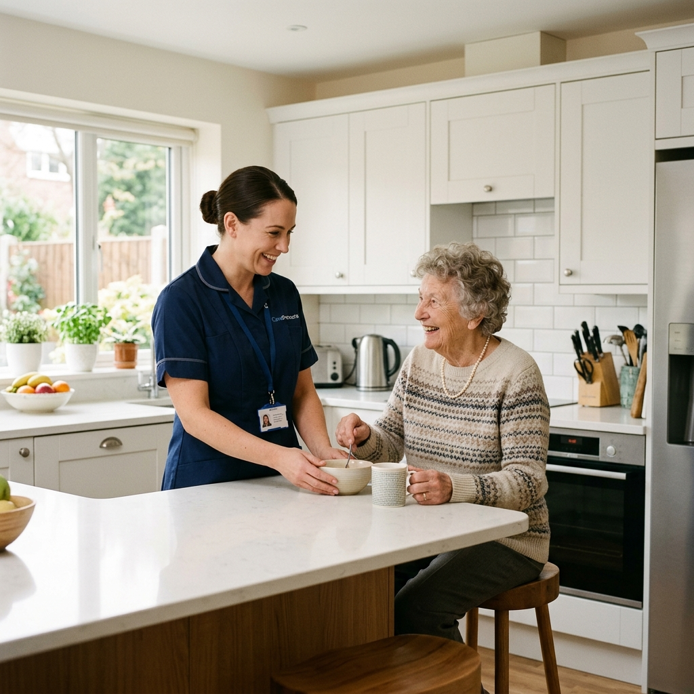

NDIS Cleaning Services
Infection Control Cleaning for Aged Care, Disability & Dementia Care Centres
Namoli Healthcare partners with care providers to keep residents, participants and staff safe. With over 30 years in hospitals, medical centres and residential aged care, we deliver documented, ATP-verified cleaning programmes for NDIS accommodation, aged care homes, dementia units and respite centres across Brisbane and Melbourne.
Specialist Cleaning for Care Environments
Care centres are not offices. Vulnerable residents, shared bathrooms, high-touch surfaces and constant foot traffic create infection risks that generic commercial cleaning was never designed to manage. Our protocols are built around the way your facility actually operates.
Residential Aged Care
Resident rooms, ensuites, dining and communal areas cleaned to hospital-grade standards, with outbreak response protocols ready when you need them.
Disability Accommodation
Provider-contracted cleaning of shared and communal areas in SIL and SDA properties and group homes, supporting your obligations under the NDIS Practice Standards.
Dementia & Memory Support
Calm, predictable cleaning routines in secure units, timed around resident rhythms to reduce agitation and disruption.
Respite & Day Centres
High-turnover respite rooms and day programme spaces reset between clients, with terminal cleans between stays.
Compliance You Can Evidence
Quality managers do not need reassurance, they need proof. Namoli builds documented cleaning programmes that stand up to accreditation, quality audits and family scrutiny.
-
Screened, Trained Teams
Every cleaner holds a valid NDIS Worker Screening Check, National Police Check and Working with Children Check, plus infection control training.
-
Standards-Aligned Protocols
Cleaning programmes mapped to the environment and infection control expectations of the NDIS Practice Standards and Aged Care Quality Standards.
-
Audit-Ready Documentation
Cleaning schedules, Safety Data Sheets, training and screening records, monthly audit results and corrective action logs, all on hand.
-
Verified, Not Assumed
ATP testing and 3M protein pens measure what the eye cannot see, so environmental cleaning performance is evidenced, not estimated.
"Namoli are just different to others! They audit monthly, they recommend solutions, and have easy ways to communicate. I have recommended them to many healthcare providers."
- Kim, Client

Why Care Providers Choose Namoli
30+ Years in Healthcare
Specialists in clinical environments, not a commercial cleaner adding care work to the round. Healthcare cleaning is all we do.
Measured Results
Monthly audits, ATP and protein testing, and clear reporting give your quality team evidence and early warning, not surprises.
Social & Environmental Impact
Our "Three-Win Philosophy" creates employment for disadvantaged community members, and we partner with TreeLabs to plant a tree for every clean.
Brisbane & Melbourne
Dedicated local teams across metropolitan Brisbane and Melbourne, with consistent rosters and named site supervisors.
NDIS & Aged Care Cleaning FAQs
We clean residential aged care homes, NDIS disability accommodation including SIL and SDA properties and group homes, dementia and memory support units, and respite and day centres. Our teams also service the clinical, hospital and medical centre environments Namoli has cleaned for over 30 years.
No. Namoli Healthcare is a specialist facility cleaning provider. Our customers are care organisations and accommodation providers who engage us under a contract, not individual participants claiming domestic cleaning against Household Tasks funding. If you are a participant or family member looking for help at home, your support coordinator or plan manager can point you to a registered domestic cleaning provider.
We build documented cleaning programmes aligned to your obligations under the NDIS Practice Standards and the Aged Care Quality Standards, covering environment and infection control requirements. You receive cleaning schedules, Safety Data Sheets, staff training and screening records, audit results and corrective action logs, ready for accreditation and quality audits.
We use ATP testing and 3M protein pens to measure surface cleanliness objectively rather than relying on visual inspection alone, and we audit monthly. Results are reported back to your quality team with recommendations, so you have evidence of environmental cleaning performance.
Yes. Every Namoli cleaner holds a valid NDIS Worker Screening Check, National Police Check and Working with Children Check, and is trained in infection control and in working respectfully around residents, participants, families and clinical staff.
Yes. Our cleaners are trained to work calmly and predictably in dementia and memory support environments, scheduling around resident routines, minimising noise and disruption, and following secure-unit access and chemical storage protocols.
We work with NDIS providers and SDA owners on a contracted basis, cleaning shared and communal areas such as kitchens, bathrooms, laundries, hallways and living spaces, plus periodic deep cleans, carpets, windows and vacancy turnovers between residents. The organisation is our customer and we invoice you directly, so the service sits outside a participant's Household Tasks funding. Cleaning of a resident's personal bedroom is scoped separately by agreement, since it is often delivered by your support workers or funded through the participant's own plan.
Protect Your Residents, Your Staff and Your Accreditation
Whether you operate one dementia unit or a portfolio of aged care homes and NDIS accommodation, Namoli Healthcare delivers cleaning you can evidence and residents can feel.
Book a discovery session and we will walk your site, review your current programme and show you exactly where the risks are.